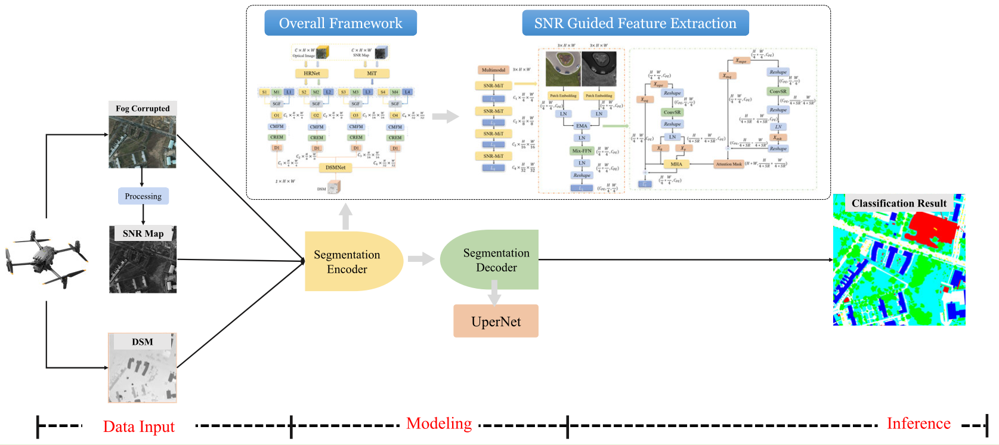
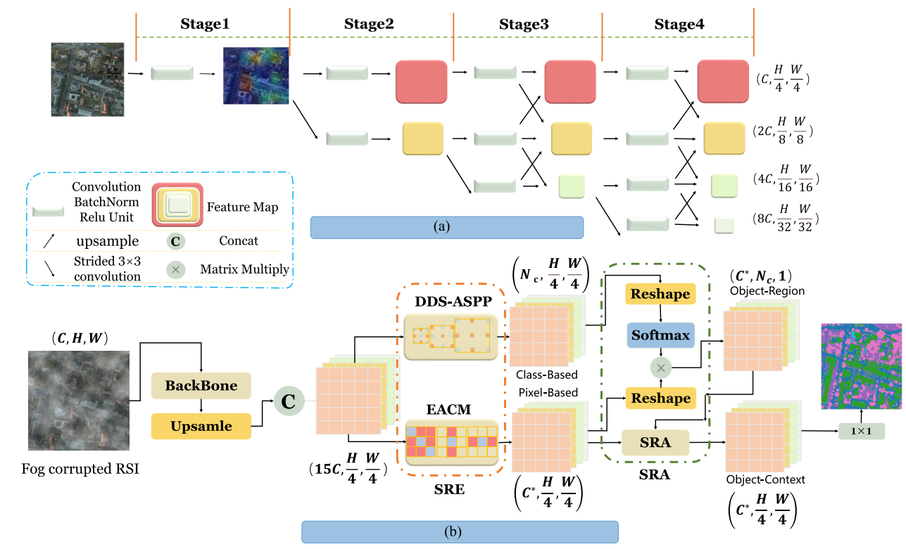
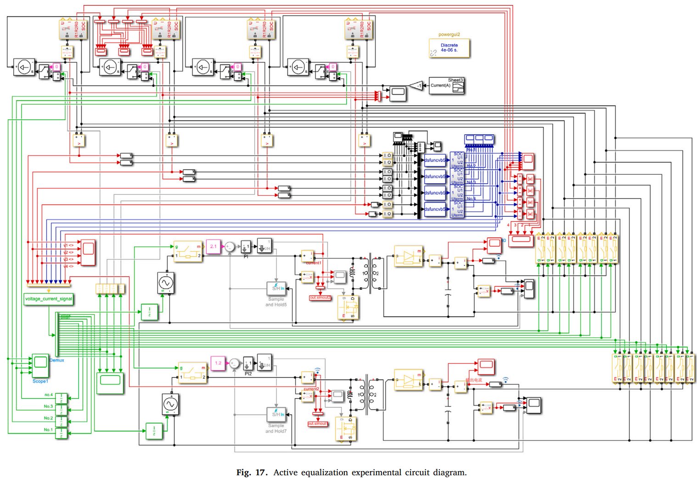
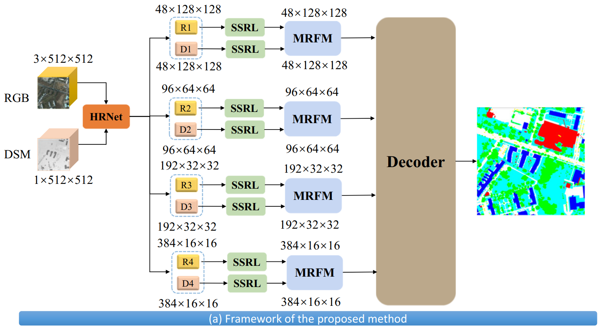
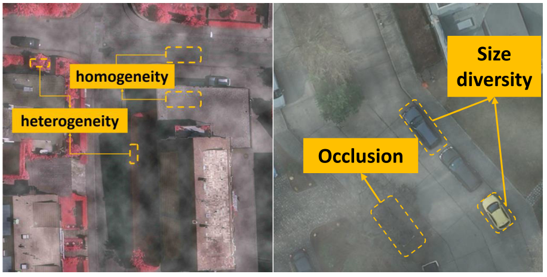
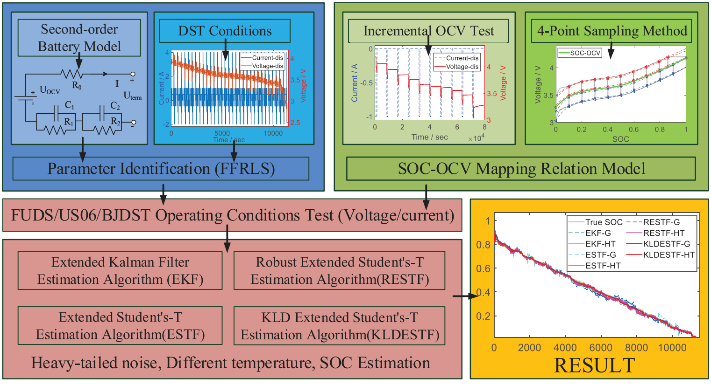
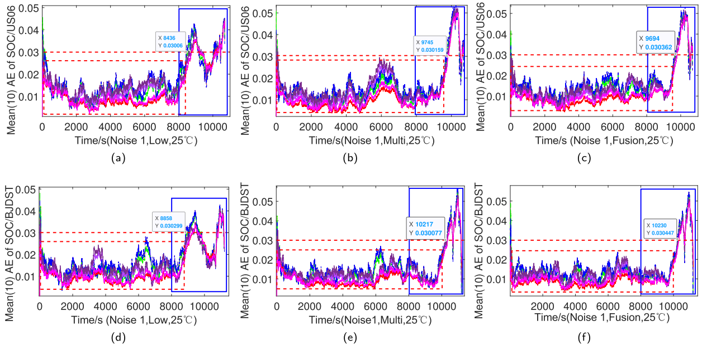
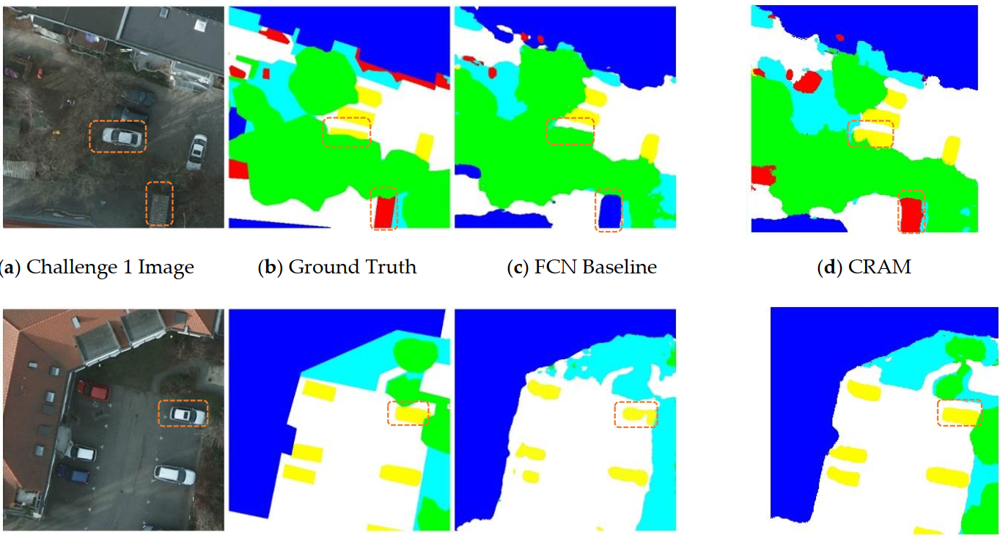
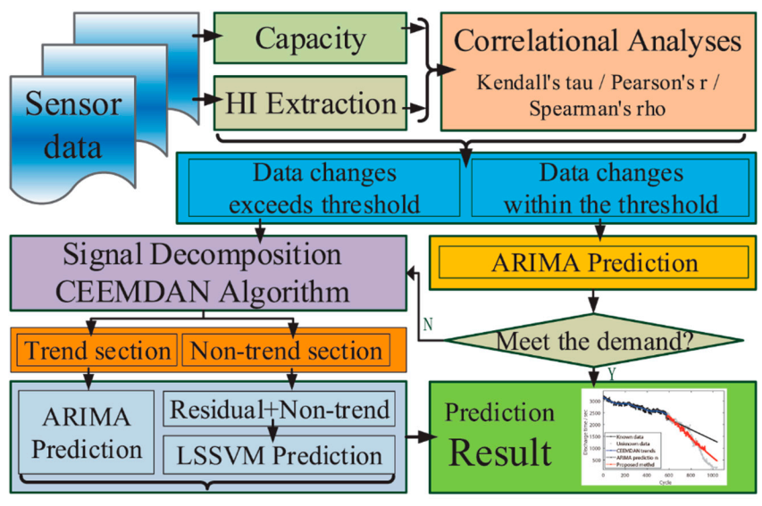
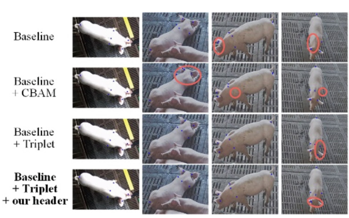

Learning Rich Multimodal Representation for Robust Land Cover Classification in Fog
IEEE Sensors Journal, 24(7), 10794–10808
第一作者 / 第一通讯
IF 4.3
JCR Q1
中科院二区

雾天条件下的鲁棒地表覆盖分类与语义分割为主要工作方向，覆盖 IEEE TGRS、IEEE Sensors Journal、 Remote Sensing 等期刊；近年工作延伸至电池状态估计与三维重建。
IEEE Sensors Journal, 24(7), 10794–10808

IEEE Transactions on Geoscience and Remote Sensing, 61, 1–16

Journal of Energy Storage, 57, 106183

Remote Sensing, 14(18), 4551

IEEE Geoscience and Remote Sensing Letters, 19, 1–5

Journal of Energy Storage, 55, 105825

Journal of Energy Storage, 52, 104916

Sensors, 21(6), 1983

Energies, 13(18), 4858

Springer Nature Switzerland, 2022

主要合作者：Wenhu Qin、Zhonghua Yun、Chao Wu、Tao Zhao、Yukun Yang、Allshine Chen、Kai Huang、Peng Ping
合作单位：南京邮电大学 · 计算机学院；与境外高校与企业保持研究合作。